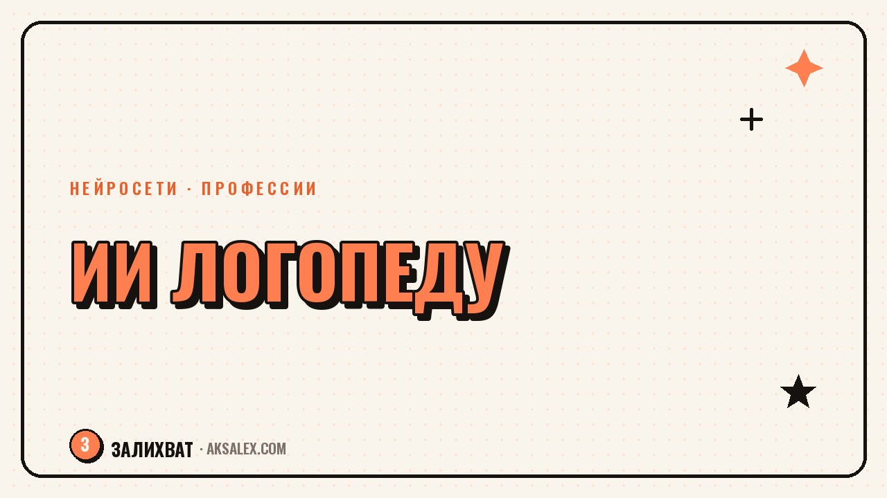

Нейросети для логопеда: занятия, отчёты и материалы

Логопед редко работает только на занятии. До и после него - подбор картинок на звук, речевая карта, письмо родителям про задание. Нейросети не заменят постановку звука и не поставят диагноз, но снимут часть рутины с документами.
Где нейросеть реально экономит время логопеду
Самая муторная часть работы логопеда - не занятие, а всё вокруг него: план, речевая карта, подбор слов на звук для каждого ребёнка отдельно. ChatGPT, Claude и YandexGPT хорошо справляются с черновиками: дай вводные про возраст и этап коррекции - получишь структуру, которую останется поправить.
Второе направление - генерация изображений для карточек. Нужна картинка с чёткой артикуляцией звука - Kandinsky и Шедеврум рисуют это за секунды, в том числе под конкретного ребёнка.
Три типа задач, которые стоит доверить ИИ
- Черновики документов - план занятий, речевая карта, заключение для ПМПК
- Подбор лексического материала - слова на нужный звук, тексты для пересказа по возрасту
- Визуальные материалы - карточки на автоматизацию и дифференциацию звуков
Подготовка карточек и игр на автоматизацию звука
Классическая задача - собрать 15-20 слов на звук, который ребёнок умеет произносить изолированно, но путает в речи. Достаточно описать задачу: «нарисуй картинку для ребёнка 5 лет: кошка играет с клубком». Получаешь набор изображений для карточек под нужный звук и позицию в слове.
С текстовыми нейросетями работа идёт в обратную сторону: просишь список слов. Запрос «дай 20 слов со звуком Ш в начале слова для ребёнка 4-5 лет» возвращает список за секунды. Остаётся проверить его вручную - иногда ИИ подкидывает слово, непонятное этому возрасту.
Нейросеть не знает конкретного ребёнка. Она делает черновик, который специалист проверяет и адаптирует - так же, как раньше адаптировал материал из методического пособия.
Документы: речевые карты, заключения, планы занятий
Отчётность чаще всего вызывает выгорание у логопедов в саду и школе: маршруты, отчёты по итогам полугодия, характеристики для ПМПК. Нейросеть собирает структуру документа из набросков - логопед кратко описывает наблюдения, ИИ оформляет это в связный текст без канцелярита.
- Записать кратко: возраст, что отработано, динамика за период
- Попросить нейросеть оформить это в заключение по стандартной структуре
- Проверить формулировки и термины - в логопедии важна точность
Диагноз и выводы всегда остаются за специалистом. Нейросеть помогает с формой документа, а не с содержанием заключения.
Общение с родителями: домашние задания и объяснения
Ещё одна точка, где нейросеть снимает нагрузку - переписка с родителями: объяснить, зачем делать гимнастику перед зеркалом, или расписать задание так, чтобы родитель понял, что делать пять минут в день. Логопед формулирует суть, а нейросеть превращает это в понятный текст без терминов.
Особенно полезно при большой нагрузке - частный кабинет на 20-25 детей в неделю. Можно собрать библиотеку формулировок под типовые ситуации: ребёнок не хочет делать гимнастику, звук закрепился на занятии, но не переносится в речь.
Какие сервисы выбрать и сколько это стоит
Логопеду, который только пробует нейросети, не нужен дорогой тариф - достаточно бесплатных версий. Ниже - сравнение того, что подходит под задачи логопеда, без лишних функций.
| Сервис | Для чего | Бесплатно | Платно |
|---|---|---|---|
| ChatGPT | Тексты документов, списки слов | Да, с ограничениями | от 1000-2000 ₽/мес |
| YandexGPT | Тексты на русском, без VPN | Да | встроено в сервисы Яндекса |
| Kandinsky | Карточки на русском запросе | Да, с лимитом в день | от 300 ₽/мес |
| Шедеврум | Детские иллюстрации для карточек | Да | опционально |
| Canva | Оформление карточек и буклетов | Да, базовый план | от 1000 ₽/мес Pro |
Разумная стратегия - начать с бесплатных версий и переходить на платные тарифы только если вырастет объём работы.
Частые ошибки при внедрении ИИ в практику
Главная ошибка - доверять нейросети диагностику. ИИ не видел ребёнка и не может оценить, идёт ли звук в спонтанной речи. Текст от нейросети про состояние речи - черновик для проверки, а не готовое заключение.
- Не копировать заключения и диагнозы из ИИ без правки
- Проверять лексику карточек на соответствие возрасту ребёнка
- Не вставлять ФИО и диагнозы детей в бесплатные версии сервисов
Частые вопросы
Может ли нейросеть поставить диагноз вместо логопеда?
Нет, у неё нет доступа к объективному обследованию речи ребёнка. Она может помочь оформить текст заключения по данным специалиста, но диагностика остаётся за логопедом.
Какие нейросети работают на русском языке без VPN?
YandexGPT, Kandinsky и Шедеврум работают в России без настроек. ChatGPT тоже доступен, но иногда нужен VPN в зависимости от региона.
Безопасно ли вводить в нейросеть данные о ребёнке?
Лучше избегать ФИО и точных диагнозов в бесплатных сервисах - такие данные могут сохраняться. Удобнее работать обезличенно: «мальчик 5 лет, звук Р».
С чего начать логопеду, который никогда не пользовался нейросетями?
С одной простой задачи - попросить ChatGPT составить список слов на звук или Kandinsky нарисовать карточку. Пять-шесть попыток покажут, где ИИ экономит время.
Заменит ли ИИ логопеда в будущем?
Нет, постановка звука и живой контакт с ребёнком - то, что нейросеть не заменит. ИИ берёт на себя материалы и документы, оставляя больше времени на занятие.
Раз тема оказалась полезной, вот что почитать следующим. Кажется, что время упущено и начинать уже поздно? Разбираем, откуда это чувство и что с ним делать на практике.
Читать статью →а не вручную